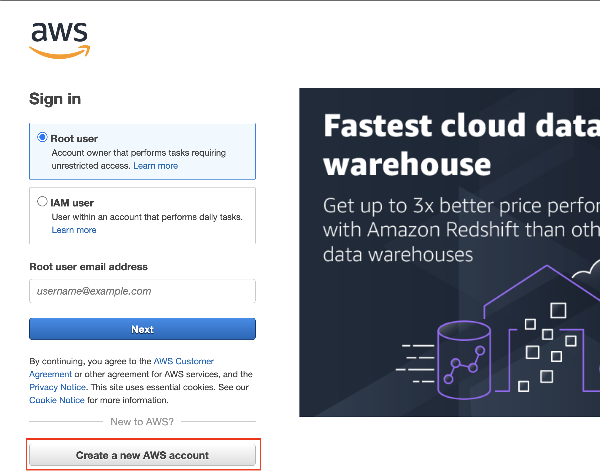
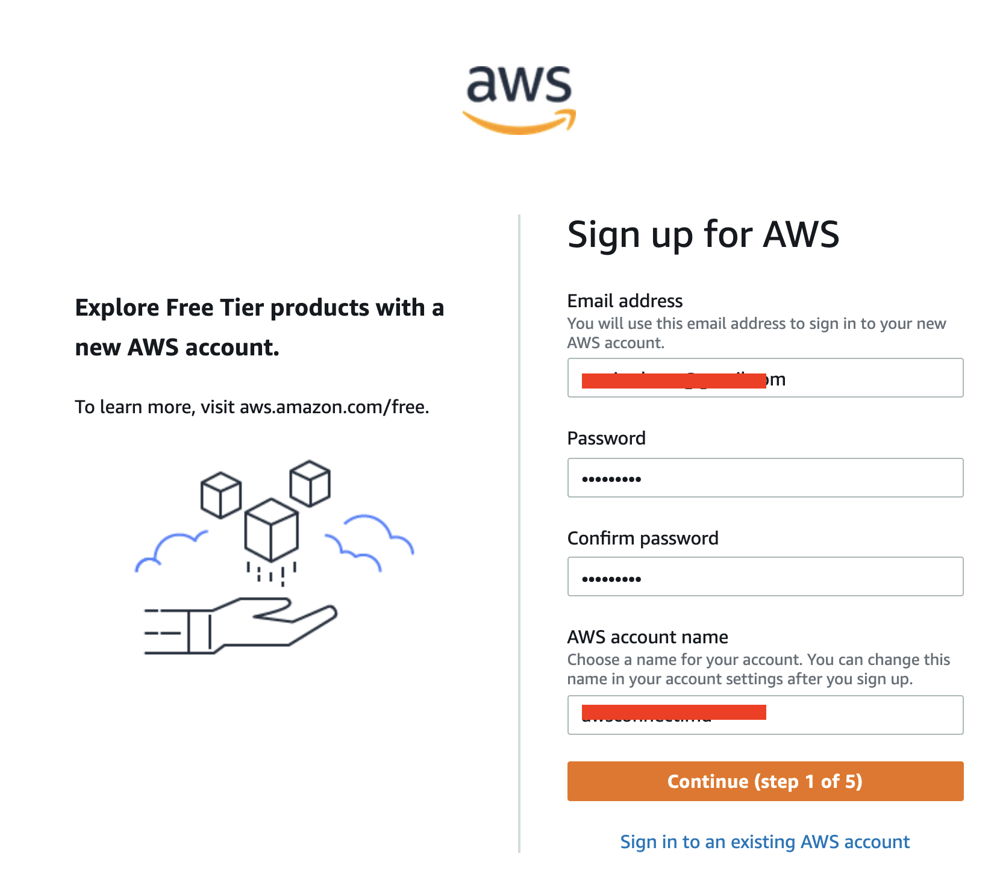
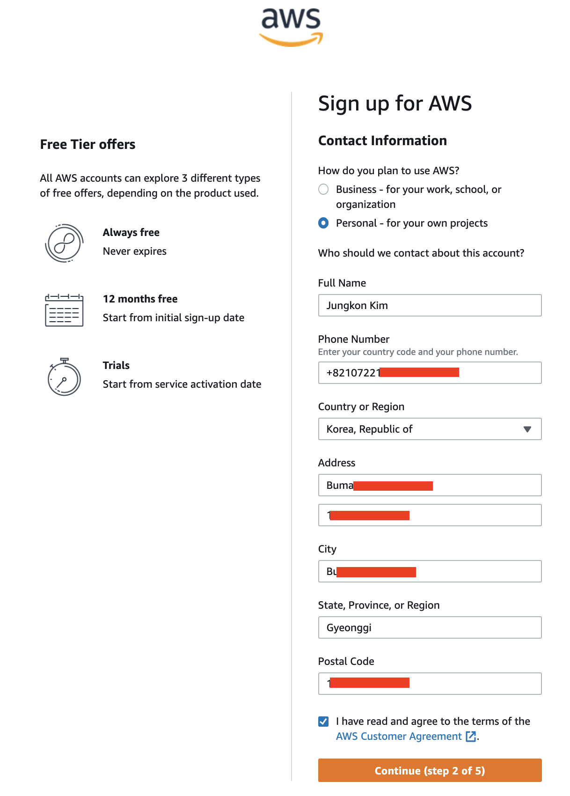
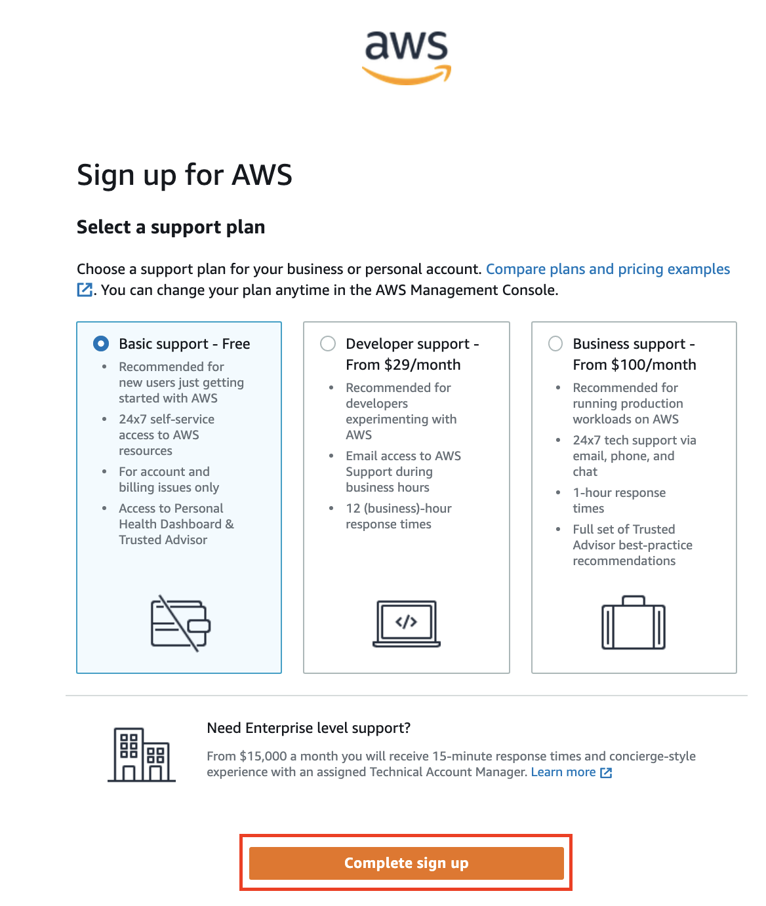
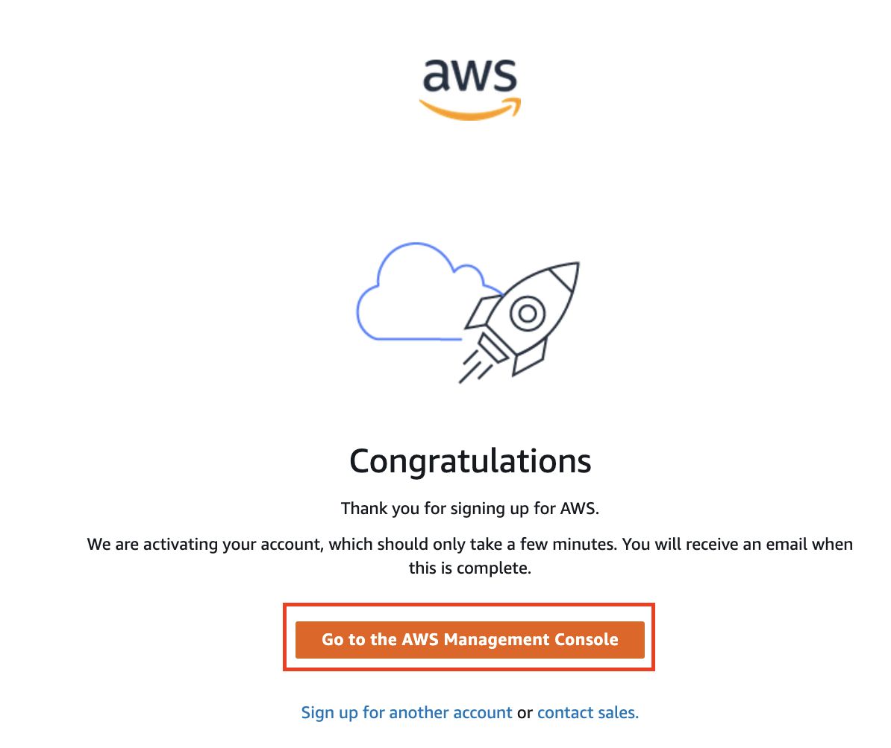
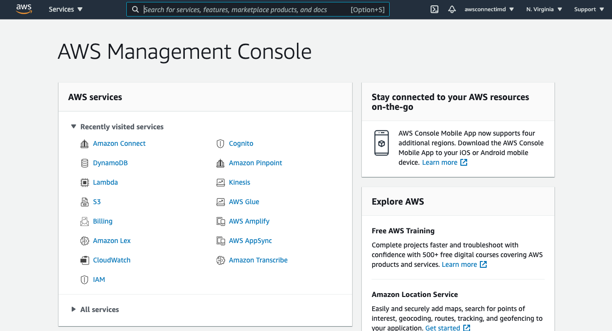
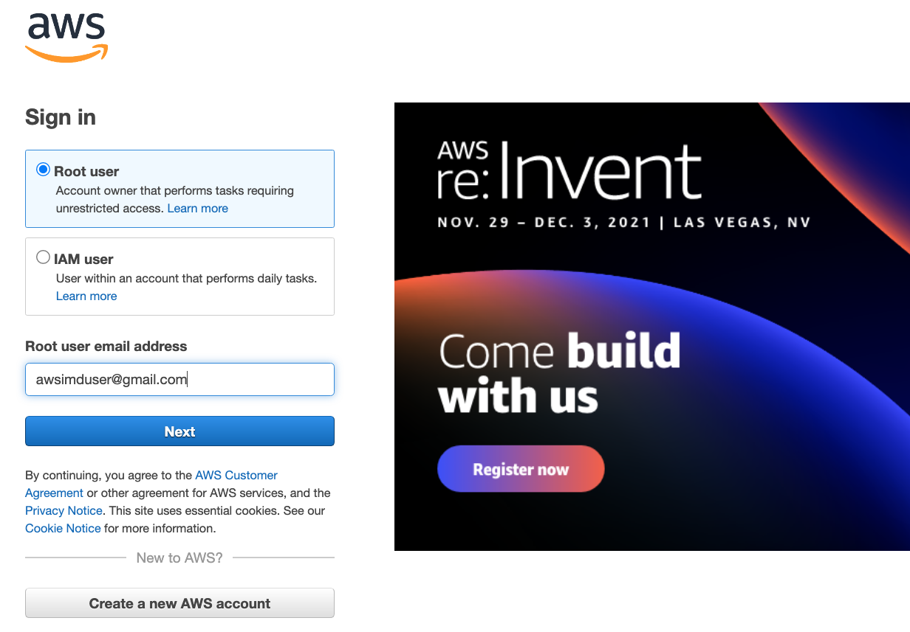

Account 만들기
본 실습을 진행하기 위한 AWS Account (계정)을 생성합니다. Account 를 생성하시면 AWS 콘솔 에 접속이 가능하며, Free Tier (무료 사용 구간) 내에서 본 실습을 진행 가능합니다. 이미 AWS Account 를 가지고 계신 분은 아래 Account 생성을 하지 않으셔도 됩니다. 다만, 꼭 IAM Role 을 생성하고 IAM Permission 을 할당할 권한을 가지고 있어야합니다.
회사에서 발급받은 Account 라면, 자세한 내용은 사내 인프라 관리자에게 문의하셔야합니다. 그렇지 않고 개인이 만든 Account 라면, Administrator 권한을 가진 경우라면 가능합니다. 권한에 대하여 잘 알지 못하는 경우라면 새로운 계정으로 Account 를 만드시기를 권장드립니다.
-
링크 Crate a new AWS Account 로 이동하여 Create a new AWS account 버튼을 클릭합니다. 이미 다른 Account 에 로그인 된 상태라면 로그아웃 이후 다시 시도합니다. 
-
Step1 : Account 를 생성하는 프로세스는 모두 5 Step으로 구성되어 있습니다. 먼저 아래 기본 정보들을 입력합니다. 실제 사용하는 이메일 계정을 이용해서 등록하셔야 합니다. 
-
Step2 : 개인 정보를 입력합니다. 이후 단계에서 카드 정보를 입력해야하는 데, 카드사에 등록된 주소와 다른 경우 인증이 안될 수 있습니다. 이럴 경우 카드사에 연락하여 카드사 정보를 수정하셔야 합니다. 
-
Step3 : 카드 정보를 입력합니다. 실제 사용하는 신용카드 정보를 입력합니다. Free Tier (무료 사용 구간) 내에서 사용하실 경우 실제 과금되지 않습니다. (이번 실습은 Free Tier 내에서 진행됩니다.)

실제 신용카드로 100원 또는 $1 정도 실제 카드사 정보 확인 목적으로 과금될 수 있습니다. 이 금액은 정보 확인 이후 바로 취소됩니다.
-
이후 카드사 인증을 위한 단계(Step4, Step5)가 시작됩니다. 이 단계를 완료하면 다음과 같은 화면이 나옵니다. 그림과 같이 Basic support 를 선택하시고 진행하시기 바랍니다. 
-
모두 완료하면 아래 화면을 확인할 수 있습니다. 축하합니다! 이제 AWS 인프라를 사용하실 수 있습니다. 아래 Go to the AWS Management Console 버튼을 눌러 Console 화면으로 진입합니다. 
-
AWS Console 화면입니다. 이제 Connect Instance 생성 로 이동해서 Connect 인스턴스를 생성합니다. 
-
이후 로그인은 이 링크를 통해 진행합니다. AWS Login 
Free Tier 에 관련된 자세한 내용은 링크 AWS Free Tier 를 참고하세요. Connect 의 Free Tier 를 검색하실 수 있습니다. 본 실습을 진행하는 것은 Free Tier 내에서 가능하며, 과금이 발생하지 않습니다만, 실습이 끝난 후에도 인프라를 계속해서 삭제하지 않고 유지하면 추가 과금이 발생할 수 있습니다.